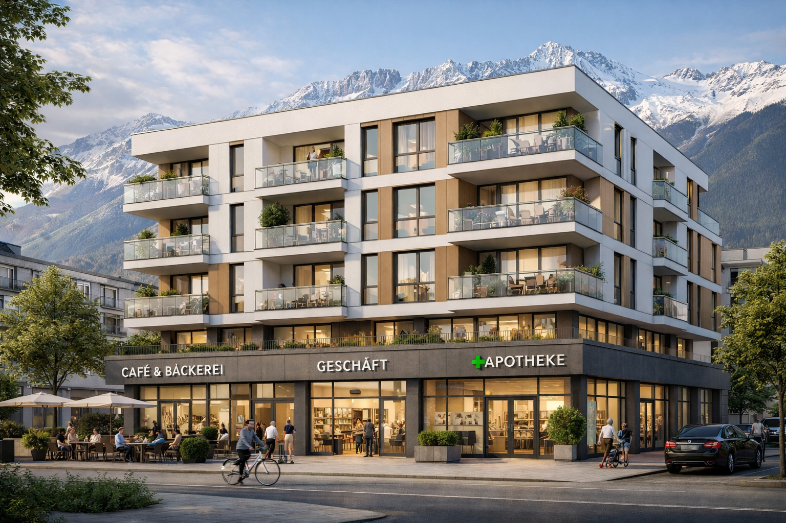

Das Programm
Konkrete Vorteile, wenn Sie uns Ihre Stimme geben – mit Fokus auf Immobilien, sozialen Wohnbau und Standort Innsbruck.
Das „Alles-in-einem“-Gebäude
Sozialer Wohnbau ist für uns die Lösung für so ziemlich alles. Unser Leitbild: Neubauten, in denen unten die Wirtschaft floriert (Ladenlokale, Büros, Gastronomie) und oben leistbarer, gemeinnütziger Wohnraum entsteht. So werden Flächen verdichtet, Pendlerströme gebündelt und die Innenstadt lebendig gehalten – ohne dass jemand auf Profit verzichten muss.

Weitere Programmpunkte
Bodenwert & Infrastruktur
Wo Boden knapp ist, entsteht Wert – und dieser Wert soll dort ankommen, wo er der Stadt nutzt, ohne Investoren abzuschrecken. Wir setzen auf eine Bodenwertabschöpfung light: nur dort, wo die Renditekalkulation nicht kippt, fließt ein Teil in Straßen, Grün, Schulen und Quartierslösungen. Projektentwickler bleiben Partner, keine Gegner – denn ohne sie kein Neubau, ohne Neubau kein zusätzlicher leistbarer Wohnraum. Die Balance heißt: Stadt gewinnt, Markt bleibt planbar.
Steuern, Abgaben und Wirtschaftsklima
Wer viel erwirtschaftet, soll nicht bestraft werden – das schafft Arbeitsplätze und zahlt am Ende auch in die Kassen. Wir wollen gezielte Erleichterungen für Eigentümer, Gewerbe und Betriebe, die in Innsbruck bleiben und ausbauen. „Trickle-down“ ist kein Schimpfwort, sondern ein Prinzip: Wenn oben investiert wird, tropft es nach unten – in Löhne, Aufträge und Umsatz im Ort. Als Steuerberater wissen wir: Nur was sich rechnet, wird gebaut und gemietet.
Verkehr und Erreichbarkeit
Innsbruck muss erreichbar bleiben – für Bewohner, Gäste und Lieferverkehr. Wir setzen auf mehr Kapazität dort, wo es die Lage verlangt: Parkraum in Premiumlagen, damit Gewerbe und Wohnen nebeneinander funktionieren. Öffi-Ausbau priorisieren wir dort, wo er Quartiere verbindet und gleichzeitig die Attraktivität der angrenzenden Immobilien stärkt. Verkehr ist kein Selbstzweck, sondern Dienstleister für eine Stadt, die wachsen und trotzdem lebbar bleiben will.
Tourismus & Innenstadt
Das Goldene Dachl bleibt das Gesicht der Stadt – unverhandelbar. Neue Projekte richten wir an der Formel aus: leistbar für Gäste, tragbar für Investoren. Das heißt: Qualität im Angebot, klare Rahmen für Beherbergung und Gastronomie, und keine Experimente auf Kosten der Einheimischen. Die Innenstadt soll leben – mit Läden, die nicht nur Souvenir verkaufen, sondern den Alltag tragen, wo es passt.
Nordkette, Umland und Nachhaltigkeit
Die Berge sind unser Kapital – optisch und wirtschaftlich. Entwicklung im Umland und am Berg muss nachhaltig sein im doppelten Sinn: ökologisch vertretbar und wirtschaftlich tragfassbar. Solange der ROI stimmt und die Aussicht frei bleibt, sind wir dafür, Wege zu erweitern, die Stadt und Region zu verbinden und Projekte zu ermöglichen, die Innsbruck als Ganzes stärken – ohne jede Hanglage zu verbauen. Wer die Nordkette sieht, soll auch in zehn Jahren noch sagen können: Das ist noch Innsbruck.